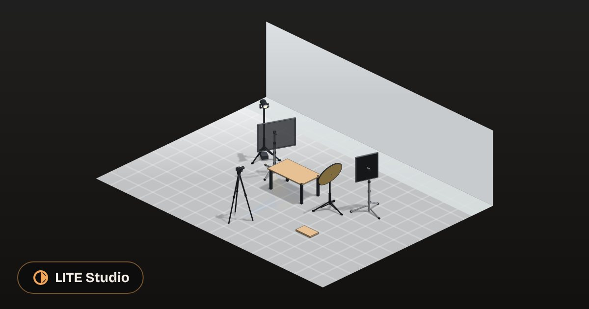
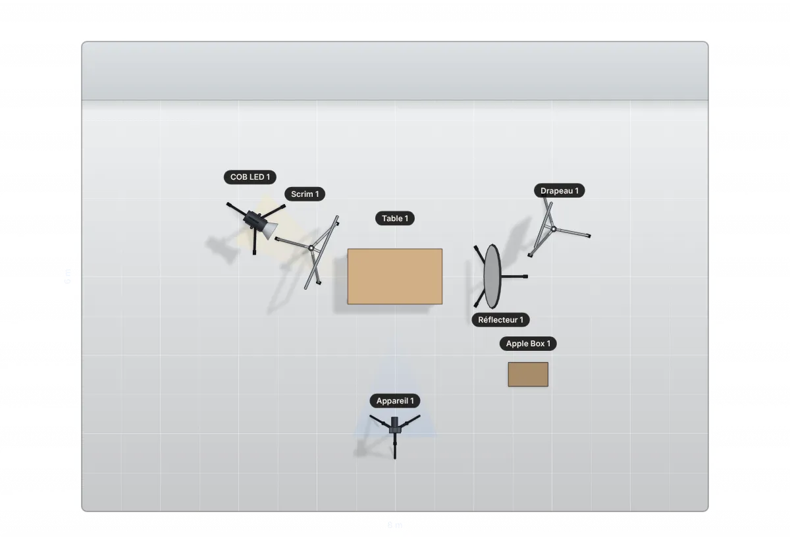

Bijou scrim control
Petite source COB, scrim de coupe et fill discret.
- 7 éléments
- Produit
- Studio 8 × 6 m


Matériel 7
Capture
- 1 ×Appareil Trépied haut70 x 86 cm
Lumières
- 1 ×COB LED 300 W32 x 32 cm
Contrôle
- 1 ×Réflecteur 80 cm
- 1 ×Drapeau 60 x 90
- 1 ×Scrim 100 x 100
Mobilier
- 1 ×Apple Box Quarter50 x 30 cm
- 1 ×Table 120 x 70
Ouvrez le preset pour déplacer le matériel, mesurer les distances et imprimer la feuille de plateau.